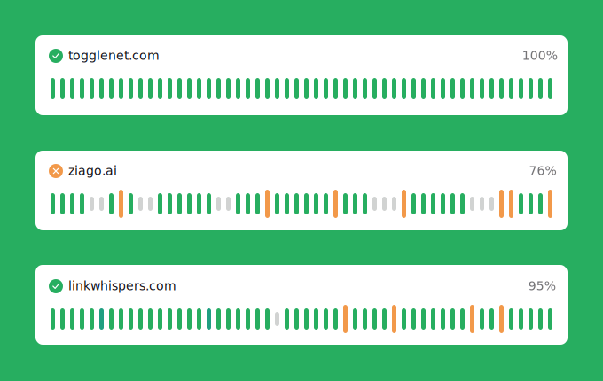

Beautiful public status pages
Create public status pages to show how your website is performing. A status page is a way of communicating between you and your customers. Customize colors, add your logo or even link your custom domain. Send status updates via an email to your Status page subscribers.
